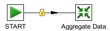

This is an iframe, to view it upgrade your browser or enable iframe display.
Prev
Next
7.4. Running the job from Spoon
This section describes how to configure and/or run the job from the
Spoon
visual editor.
7.4.1. Job Structure

Figure 7.1. The worked example 3 job
The Worked example 3 job uses a single transformation,
MapAndAggregateData
, to perform the key mapping and join.
Prev
7.3. Structure of the Example
Up
Home
Next
7.4.2. Aggregate Data